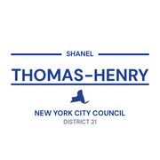
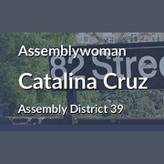
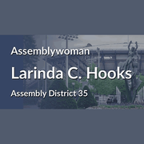
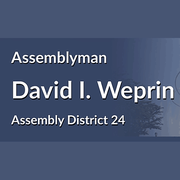
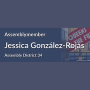

The district
 City Council
City Council State Assembly
State Assembly State Senate
State Senate Subway
Subway Citi Bike
Citi Bike NYC Ferry
NYC FerryTurn layers on and off. Tap an official's logo or a board's seal for its page. Zoning and land use lot by lot are on the land use map.
About
Representative Grace Meng represents New York’s 6th Congressional District in the United States House of Representatives. It sits in Queens.
The district overlaps community boards Queens 8, Queens 11, Queens 7, Queens 5, Queens 6, Queens 4, Queens 2 and Queens 3.
It is policed by the 104th, 107th, 108th, 109th, 110th, 111th, 112th and 115th Precincts.
It overlaps council districts 19, 20, 21, 23, 24, 25, 26, 29 and 30, Assembly districts 24, 25, 26, 27, 28, 30, 35, 37, 39 and 40 and Senate districts 11, 12, 13, 14, 15 and 16.
Members of the House serve two year terms, with no term limit.
Next on the ballot in November 2026. Find your poll site and sample ballot there, or see what is coming up on the calendar.
Congressional District 6 in numbers
U.S. Census Bureau, American Community Survey 2019-2023 5-year estimates.
Bills
Committees
Contact
118-35 Queens Boulevard, Suite 900
Forest Hills, NY 11375
Overlap
Community boards


Bars show how many of the district's election districts fall in each board.
Overlapping elected officials














| Queens CB 8 | 21% of the district | 75% of it |
| Queens CB 11 | 19% of the district | 52% of it |
| Queens CB 7 | 18% of the district | 40% of it |
| Queens CB 5 | 12% of the district | 40% of it |
| Queens CB 6 | 11% of the district | 97% of it |
| Queens CB 4 | 8% of the district | 90% of it |
| Queens park/airport area | 6% of the district | 95% of it |
| Queens CB 2 | 4% of the district | 20% of it |
| Queens CB 3 | 1% of the district | 6% of it |
| 107 Precinct | 21% of the district | 75% of it |
| 111 Precinct | 19% of the district | 52% of it |
| 109 Precinct | 17% of the district | 39% of it |
| 110 Precinct | 14% of the district | 91% of it |
| 112 Precinct | 12% of the district | 99% of it |
| 104 Precinct | 12% of the district | 40% of it |
| 108 Precinct | 4% of the district | 20% of it |
| 115 Precinct | 1% of the district | 5% of it |
| Sector 111C | 10% of the district | 100% of it |
| Sector 109A | 8% of the district | 100% of it |
| Sector 107D | 8% of the district | 100% of it |
| Sector 104D | 7% of the district | 78% of it |
| Sector 111A | 7% of the district | 96% of it |
| Sector 110D | 7% of the district | 90% of it |
| Sector 107A | 6% of the district | 74% of it |
| Sector 109B | 5% of the district | 99% of it |
| Sector 107B | 5% of the district | 61% of it |
| Sector 112A | 5% of the district | 97% of it |
| Sector 104C | 4% of the district | 56% of it |
| Sector 109C | 3% of the district | 25% of it |
| Sector 112D | 3% of the district | 100% of it |
| Sector 110A | 3% of the district | 100% of it |
| School District 25 | 33% of the district | 55% of it |
| School District 26 | 26% of the district | 45% of it |
| School District 24 | 22% of the district | 40% of it |
| School District 28 | 14% of the district | 42% of it |
| School District 30 | 3% of the district | 7% of it |
| School District 29 | 1% of the district | 1% of it |
| Council District 24 | 20% of the district | 78% of it |
| Council District 20 | 20% of the district | 100% of it |
| Council District 23 | 16% of the district | 38% of it |
| Council District 30 | 15% of the district | 66% of it |
| Council District 29 | 7% of the district | 40% of it |
| Council District 21 | 7% of the district | 38% of it |
| Council District 19 | 6% of the district | 13% of it |
| Council District 25 | 5% of the district | 56% of it |
| Council District 26 | 4% of the district | 15% of it |
| Assembly District 25 | 25% of the district | 97% of it |
| Assembly District 27 | 15% of the district | 50% of it |
| Assembly District 28 | 12% of the district | 60% of it |
| Assembly District 30 | 9% of the district | 83% of it |
| Assembly District 40 | 9% of the district | 67% of it |
| Assembly District 26 | 8% of the district | 20% of it |
| Assembly District 24 | 7% of the district | 33% of it |
| Assembly District 39 | 6% of the district | 79% of it |
| Assembly District 35 | 4% of the district | 30% of it |
| Assembly District 37 | 4% of the district | 18% of it |
| Senate District 16 | 47% of the district | 82% of it |
| Senate District 12 | 13% of the district | 33% of it |
| Senate District 15 | 13% of the district | 32% of it |
| Senate District 14 | 10% of the district | 20% of it |
| Senate District 11 | 10% of the district | 12% of it |
| Senate District 13 | 7% of the district | 39% of it |